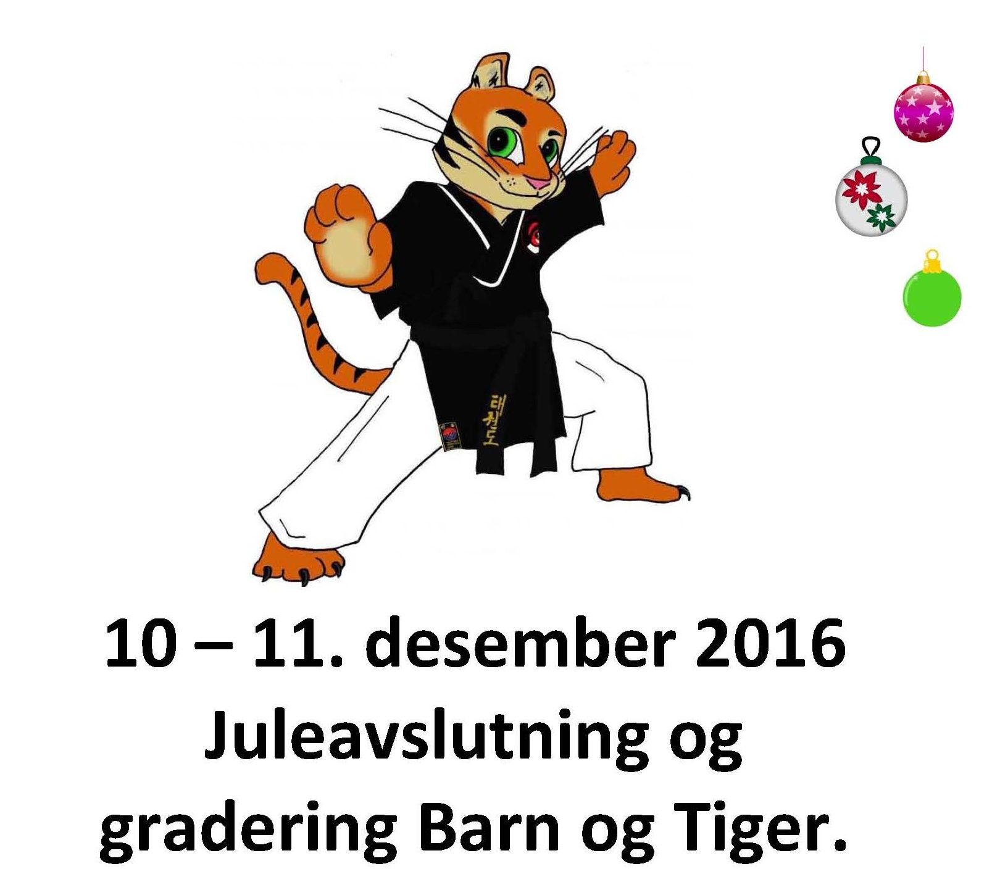
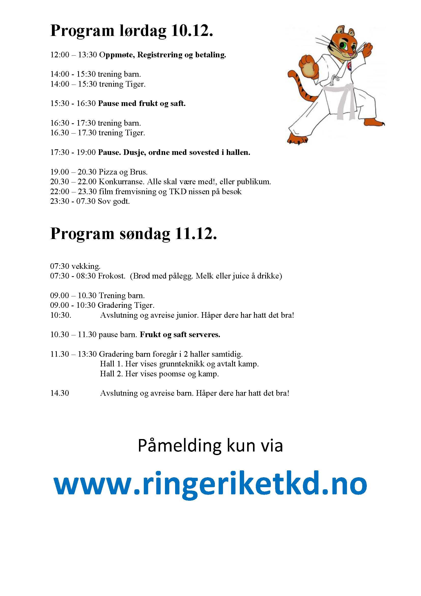
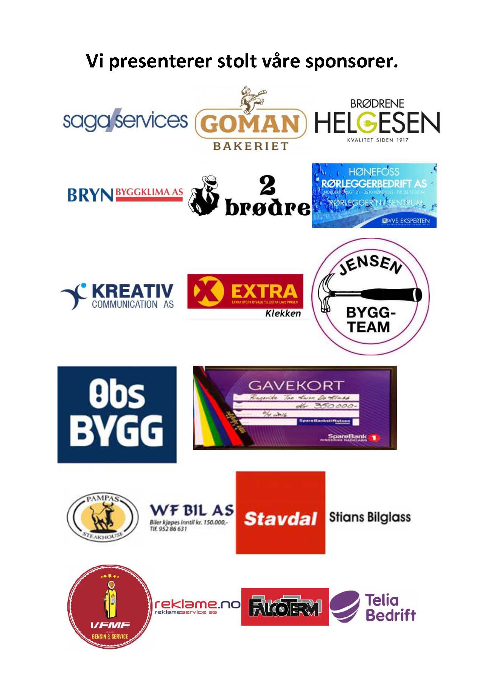
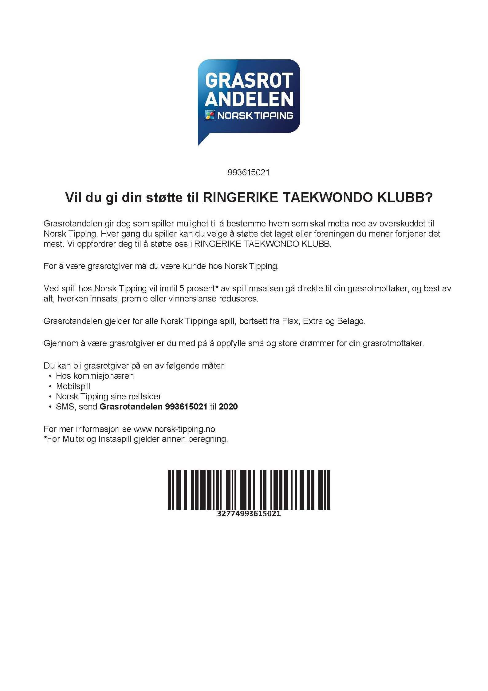

Arrangement
Ringerike TKD julecamp

Klubben arrangerer også i år vår populære vinter-camp med trening, overnatting, pizza og brus, nisse på besøk, konkurranser og gradering. Nytt i år er at vi vil forsøke å avholde en konkurranse i poomse for de med grønt belte eller høyere.
Her er det bare å melde seg på!, i fjor var det 67 barn i Ringerikshallen. Blir vi flere i år?
Her kan du laste ned hele programmet. 2016-program-juleseminar-barn-og-tiger
Klikk her for påmelding!


